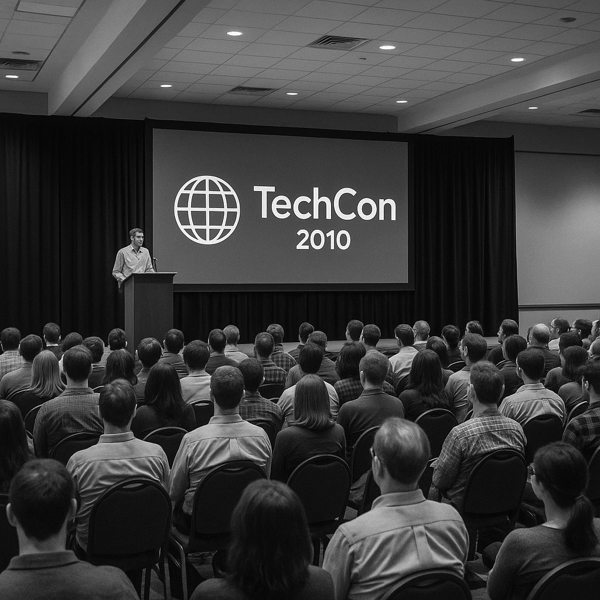
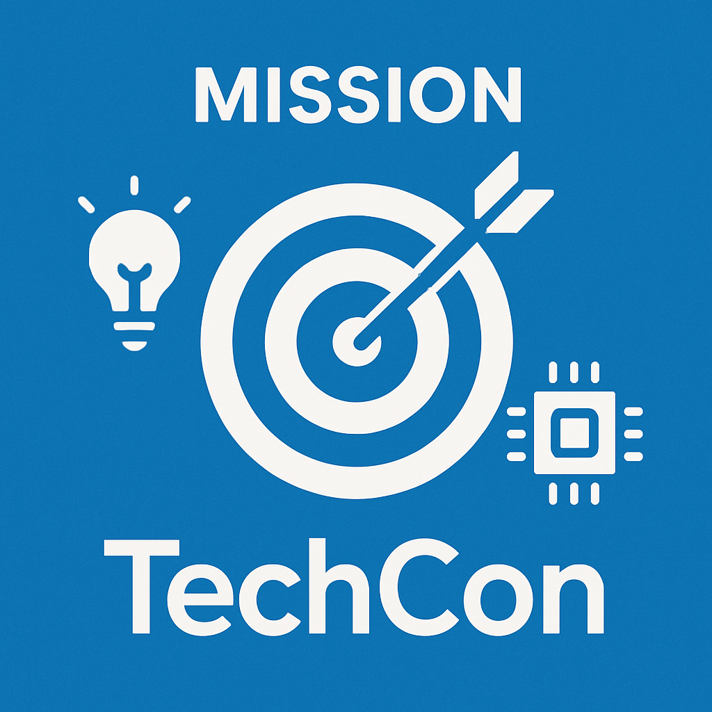

History
TechCon was founded in 2010 with the vision of bringing together technology enthusiasts from around the globe. What started as a small gathering of 100 attendees has evolved into one of the most prestigious technology conferences, attracting thousands of participants annually.

Over the years, TechCon has witnessed and showcased groundbreaking innovations, from the early days of mobile computing to the current era of artificial intelligence and quantum computing.
Mission
Our mission is to foster innovation, collaboration, and knowledge sharing within the global technology community. We strive to create an inclusive environment where ideas flourish and connections are made that drive the future of technology.

We believe in democratizing access to cutting-edge technological insights and providing a platform for both established leaders and emerging voices in the tech industry.
Past Speakers
TechCon has been honored to host some of the most influential figures in technology. Our speakers have included industry pioneers, innovative researchers, and visionary entrepreneurs who have shaped the digital landscape.

Dr. Sarah Chen, renowned AI researcher, delivered a groundbreaking keynote on machine learning ethics in 2022, influencing industry standards worldwide.
Marcus Rodriguez, cybersecurity expert, shared insights on quantum encryption that have been adopted by major tech corporations globally.